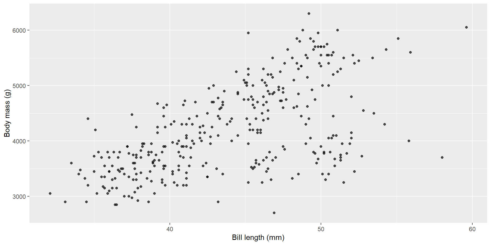
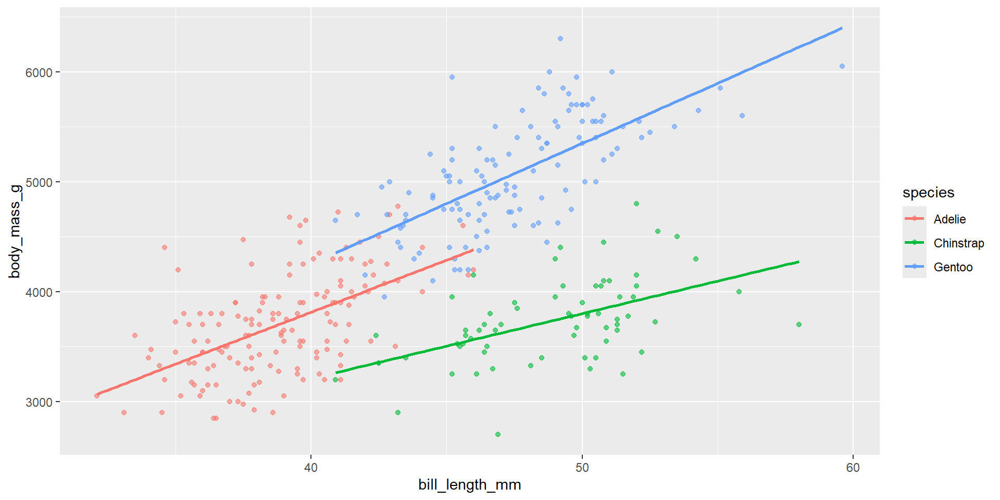

Call:
lm(formula = body_mass_g ~ bill_length_mm, data = penguins)
Coefficients:
(Intercept) bill_length_mm
362.31 87.42 Concepts and intuition
By the end, you should be able to:
lm())We’ll use a small, friendly dataset.
A statistical model is a simplified mathematical description of a real system.
A relationship can be:
A linear model can include transformed predictors:
y = β0 + β1 x + β2 x^2 + ε is linear in β’sy = β0 + β1 log(x) + ε is linear in β’sy = β0 + exp(β1 x) + ε is not linear in β’s\[ \mathbf{y} = \mathbf{X}\boldsymbol{\beta} + \boldsymbol{\varepsilon} \]
Simple regression often answers at least one of:
Regression to the mean happens when you pick people (or things) because they had an extreme result once, then measure them again.
What you see: the extreme scores move closer to average on the second measurement.
Why? Every measurement has some randomness (luck, conditions, mood, error). When you pick “the best” or “the worst” from one measurement, you accidentally pick people who got lucky (or unlucky) that day. Next time, their luck is different—so their score drifts back toward their usual level.
Key examples:
The trap: this looks like improvement (or decline), but it’s just randomness evening out. Nothing actually changed.
The connection: linear regression literally models regression to the mean.
History: Francis Galton (1886) studied parent and child heights. He noticed:
He called this “regression toward mediocrity” (we now say “regression to the mean”).
Mathematics: When you fit a regression line \(\hat{y} = \alpha + \beta x\), you’re estimating the conditional mean: the average y for a given x.
So: linear regression is the mathematical tool that quantifies how much extreme values regress back toward the mean. The phenomenon gave the method its name!
Regression describes association in your dataset.
To talk about causality you need:
\[ y_i = \alpha + \beta x_i + \varepsilon_i,\quad \varepsilon_i \sim \mathcal{N}(0, \sigma^2) \]
Here’s the relationship we’ll model:
lm()
Call:
lm(formula = body_mass_g ~ bill_length_mm, data = penguins)
Coefficients:
(Intercept) bill_length_mm
362.31 87.42 The fitted regression coefficients with 95% confidence intervals:
| term | estimate | std.error | statistic | p.value | conf.low | conf.high |
|---|---|---|---|---|---|---|
| (Intercept) | 362.31 | 283.35 | 1.28 | 0.2 | -195.02 | 919.64 |
| bill_length_mm | 87.42 | 6.40 | 13.65 | 0.0 | 74.82 | 100.01 |
Interpretation template:
Two concepts:
First few observations with fitted values and residuals:
| Body mass (g) | Bill length (mm) | Fitted | Residual |
|---|---|---|---|
| 3750 | 39.1 | 3780.2 | -30.2 |
| 3800 | 39.5 | 3815.2 | -15.2 |
| 3250 | 40.3 | 3885.1 | -635.1 |
| 3450 | 36.7 | 3570.4 | -120.4 |
| 3650 | 39.3 | 3797.7 | -147.7 |
| 3625 | 38.9 | 3762.8 | -137.8 |
Ordinary least squares chooses alpha, beta to minimise:
\[ \sum_i (y_i - \hat{y}_i)^2 \]
This is the sum of squared residuals.
Because we assume:
If these are not true, we move to:
So “ordinary” = the simplest, default case.
Ordinary least squares (OLS) chooses α, β that minimise:
\[ \sum_i (y_i - \hat{y}_i)^2 \]
This is why you’ll hear “least squares line of best fit”.
How much variation does the model explain?
| R² | Adjusted R² | Residual SD |
|---|---|---|
| 0.354 | 0.352 | 645.433 |
Caution:
Full model summary:
Call:
lm(formula = body_mass_g ~ bill_length_mm, data = penguins)
Residuals:
Min 1Q Median 3Q Max
-1762.08 -446.98 32.59 462.31 1636.86
Coefficients:
Estimate Std. Error t value Pr(>|t|)
(Intercept) 362.307 283.345 1.279 0.202
bill_length_mm 87.415 6.402 13.654 <2e-16 ***
---
Signif. codes: 0 '***' 0.001 '**' 0.01 '*' 0.05 '.' 0.1 ' ' 1
Residual standard error: 645.4 on 340 degrees of freedom
Multiple R-squared: 0.3542, Adjusted R-squared: 0.3523
F-statistic: 186.4 on 1 and 340 DF, p-value: < 2.2e-16For each coefficient \(\beta_j\), the null hypothesis is:
\[ H_0: \beta_j = 0 \]
The test statistic is:
\[ t = \frac{\hat{\beta}_j}{SE(\hat{\beta}_j)} \]
This follows a t-distribution under the model assumptions.
Analysis of Variance Table
Response: body_mass_g
Df Sum Sq Mean Sq F value Pr(>F)
bill_length_mm 1 77669072 77669072 186.44 < 2.2e-16 ***
Residuals 340 141638626 416584
---
Signif. codes: 0 '***' 0.001 '**' 0.01 '*' 0.05 '.' 0.1 ' ' 1ANOVA partitions variance into:
The F-statistic is:
\[ F = \frac{MS_{model}}{MS_{error}} \]
If this ratio is large, the model explains much more variance than expected by chance.
2.5 % 97.5 %
(Intercept) -195.02364 919.6371
bill_length_mm 74.82279 100.0078A 95% CI is the range of slopes compatible with the data under the model.
The coefficient table shows estimates, standard errors, t-statistics, and p-values:
| Estimate | Std. Error | t value | Pr(>|t|) | |
|---|---|---|---|---|
| (Intercept) | 362.307 | 283.345 | 1.279 | 0.202 |
| bill_length_mm | 87.415 | 6.402 | 13.654 | 0.000 |
Typical output:
| Term | Estimate | Std. Error | t value | Pr(> |
|---|---|---|---|---|
| (Intercept) | alpha | SE(alpha) | t | p |
| x | beta | SE(beta) | t | p |
The intercept is the expected value of y when all predictors = 0.
The slope is the expected change in y per 1-unit increase in x, holding other predictors constant.
Units always matter:
g per mm, kg per ha, t per °C, etc.
Call:
lm(formula = body_mass_g ~ species, data = penguins)
Residuals:
Min 1Q Median 3Q Max
-1126.02 -333.09 -33.09 316.91 1223.98
Coefficients:
Estimate Std. Error t value Pr(>|t|)
(Intercept) 3700.66 37.62 98.37 <2e-16 ***
speciesChinstrap 32.43 67.51 0.48 0.631
speciesGentoo 1375.35 56.15 24.50 <2e-16 ***
---
Signif. codes: 0 '***' 0.001 '**' 0.01 '*' 0.05 '.' 0.1 ' ' 1
Residual standard error: 462.3 on 339 degrees of freedom
Multiple R-squared: 0.6697, Adjusted R-squared: 0.6677
F-statistic: 343.6 on 2 and 339 DF, p-value: < 2.2e-16Here:
Example interpretation:
Model with interaction term:
Call:
lm(formula = body_mass_g ~ bill_length_mm * species, data = penguins)
Residuals:
Min 1Q Median 3Q Max
-918.76 -245.89 -8.65 238.44 1126.27
Coefficients:
Estimate Std. Error t value Pr(>|t|)
(Intercept) 34.88 443.18 0.079 0.937
bill_length_mm 94.50 11.40 8.291 2.73e-15 ***
speciesChinstrap 811.26 799.81 1.014 0.311
speciesGentoo -158.71 683.19 -0.232 0.816
bill_length_mm:speciesChinstrap -35.38 17.75 -1.994 0.047 *
bill_length_mm:speciesGentoo 14.96 15.79 0.948 0.344
---
Signif. codes: 0 '***' 0.001 '**' 0.01 '*' 0.05 '.' 0.1 ' ' 1
Residual standard error: 371.8 on 336 degrees of freedom
Multiple R-squared: 0.7882, Adjusted R-squared: 0.7851
F-statistic: 250.1 on 5 and 336 DF, p-value: < 2.2e-16Interpretation:
Every coefficient is a conditional comparison.
It is always interpreted given the other terms in the model are held constant.
In practice we check these assumptions about residuals:
What to look for:
If you see curvature in residuals vs fitted:
Analysis of Variance Table
Model 1: body_mass_g ~ bill_length_mm
Model 2: body_mass_g ~ poly(bill_length_mm, 2)
Res.Df RSS Df Sum of Sq F Pr(>F)
1 340 141638626
2 339 138722819 1 2915807 7.1254 0.007966 **
---
Signif. codes: 0 '***' 0.001 '**' 0.01 '*' 0.05 '.' 0.1 ' ' 1If residual spread increases with fitted values:
Independence is usually not visible from a single plot.
Breaks happen with:
If independence is violated, standard errors can be wrong → misleading p-values.
Normal residuals matter most when:
With moderate/large samples, regression is often robust, but you still diagnose.
Cook’s distance identifies observations that strongly influence the fit. The top 10 most influential observations:
| Body mass (g) | Bill length (mm) | Cook’s D |
|---|---|---|
| 3700 | 58.0 | 0.085 |
| 4000 | 55.8 | 0.032 |
| 3250 | 51.5 | 0.027 |
| 3450 | 52.2 | 0.026 |
| 3725 | 52.7 | 0.020 |
| 6300 | 49.2 | 0.018 |
| 3300 | 50.3 | 0.018 |
| 3400 | 50.5 | 0.017 |
| 3550 | 50.9 | 0.015 |
| 3400 | 50.1 | 0.015 |
When assumptions fail:
\[ y = \beta_0 + \beta_1 x_1 + \beta_2 x_2 + \dots + \varepsilon \]
Interpretation: holding other predictors constant.
# A tibble: 3 × 7
term estimate std.error statistic p.value conf.low conf.high
<chr> <dbl> <dbl> <dbl> <dbl> <dbl> <dbl>
1 (Intercept) -5737. 308. -18.6 7.80e-54 -6343. -5131.
2 bill_length_mm 6.05 5.18 1.17 2.44e- 1 -4.14 16.2
3 flipper_length_mm 48.1 2.01 23.9 7.56e-75 44.2 52.1An interaction means: the effect of x1 depends on x2.
Model with interaction between bill length and species:
| term | estimate | std.error | statistic | p.value |
|---|---|---|---|---|
| (Intercept) | 34.88 | 443.18 | 0.08 | 0.94 |
| bill_length_mm | 94.50 | 11.40 | 8.29 | 0.00 |
| speciesChinstrap | 811.26 | 799.81 | 1.01 | 0.31 |
| speciesGentoo | -158.71 | 683.19 | -0.23 | 0.82 |
| bill_length_mm:speciesChinstrap | -35.38 | 17.75 | -1.99 | 0.05 |
| bill_length_mm:speciesGentoo | 14.96 | 15.79 | 0.95 | 0.34 |
Visualise:
Blocks are nuisance structure you control for.
Adding island as a blocking factor:
| term | estimate | std.error | statistic | p.value | conf.low | conf.high |
|---|---|---|---|---|---|---|
| (Intercept) | 1225.79 | 243.18 | 5.04 | 0 | 747.45 | 1704.13 |
| bill_length_mm | 77.12 | 5.31 | 14.53 | 0 | 66.68 | 87.56 |
| islandDream | -919.07 | 58.62 | -15.68 | 0 | -1034.38 | -803.76 |
| islandTorgersen | -523.29 | 85.55 | -6.12 | 0 | -691.57 | -355.02 |
If you have repeated measures, you often want:
\[ y_{ij} = \beta_0 + b_{0i} + \beta_1 x_{ij} + \varepsilon_{ij} \]
In R: lme4::lmer() (covered in mixed models).
Minimum professional reporting:
Example sentence:
A linear model indicated that body mass increased with bill length (β = … g/mm, 95% CI …), explaining R² = … of variance; residual plots suggested …